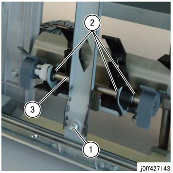

REP 27.28.1 桨轮 轴 组件 
参考 PL:PL 27.28
Removal

在执行...之前 disassembly, 放下 端部 导轨 在哪里 the 桨轮 轴 组件 已安装 to a 位置 该 makes it visible 从 the 原位 位置 (hidden 位置). To 放下 端部 导轨 automatically, one 以下 2 procedures 可以 used.
打印 1 纸张 of A3 尺寸 或更大 纸张 和/与 单面/单个 折叠. (用于 A3 尺寸, it 将 standby 在...附近 调整 位置 在哪里 the 端部 导轨 螺钉 用于 小册子 slant 调整 可以 accessed 从 the elliptical hole)
输入 Diag 模式 or the PC Diag screen 和 repeat DC330 [013-045] (小册子 ENDGUIDE MOT 低 下) or DC330 [013-046] (小册子 ENDGUIDE MOT HI 下) 3 to 4 times.

执行IOT关机步骤. 确认电源已关闭并拔掉电源插头.
拆卸 小册子 传输 组件. (REP 27.21.1)
拆卸 桨轮 轴 组件. (图 1)
移动 the 桨轮 轴 组件 到 位置 shown in 图 1 在执行...之前 the 操作.
拆卸螺钉, 和 拆卸 端部 导轨 中央 板 (PL 27.28).
拆卸E型卡环 (x3).
拆卸 桨轮 轴 组件.

(图 1) ff427143